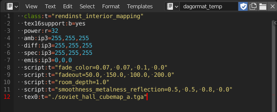
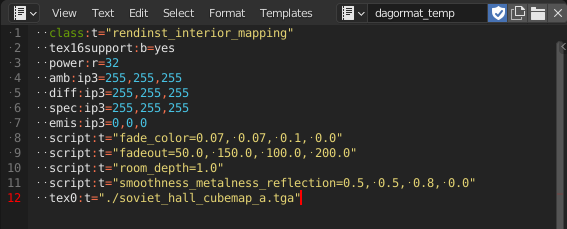
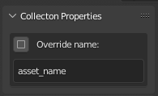
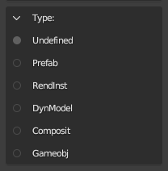
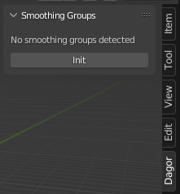
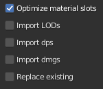

dag4blend
Installation
Go to Edit > Preferences > Add-ons in Blender.
Click small dropdown on the top right corner and choose Install from Disk…

Navigate to the
.zipfile of the add-on.After installation, check the box next to the add-on in the list.
To use add-on properly you need to perform some initial configuration, so do not close the Preferences window yet:
The path for ObjProps presets: and shader list dagorShaders.cfg: can now be set manually. This feature ensures that updating the add-on does not overwrite any user-made changes. It is recommended to store presets outside the add-on directory.
Until the path to an existing directory is specified, the preset menu will not
be displayed. For each project you work on, you need to specify the path to the
assets/ directory.
Note
Many interface elements have tooltips that appear when you hover the cursor over them.
Configuring Projects
Some operators of dag4blend need additional info about current game to work properly. To create new set of properties press + ADD Project.

Every non-configured parameter of new project is marked by ERROR icon.
name: how this project will be displayed in “Active Project” dropdown.
path: where all game assets stored. DAGs, textures, composites, proxymats, etc.
Shading mode: shaders behave slightly different between projects. The add-on is designed to adapt to two main shader groups: daNetGame-like and War Thunder-like shaders.
Palettes:
global palette is used everywhere dy default, unless it’s overriden.
local palette can be configured per-level and can be used instead of global on specific assets.
Note
By default, the global and local palettes will be simple red and green fills, until you specify a path to existing texture.
Configured project should have no error icons. When parameters are set, use lock button to make it non-editable. It prevents changing properties or project removal by accident.

You don’t have to always use Preferences window to change the active project or edit its parameters. Same exact project configurator can be found in the Scene Properties:
Note
Project parameters are stored in Add-on preferences, but sometimes they are not being saved on exit automatically. To ensure that new parameters won’t be lost, you can use Save Preferences button, available right in project configurator. Remember, that it’s a global operator, which saves all the preferences, not just dag4blend ones.
Experimental Features
This block contains toggles for new tools that are functional but have some limitations. Currently, it includes only a Composite Editor:
Log and Text Editors
Text objects play an important role in this toolset, so it is recommended to add a text field to your layout or add a new window with just a text field if you are working with multiple monitors.

The import/export functions (and future ones) write execution information to a text log field.
Note
The log does not clear itself, so remember to clear it periodically after
ensuring that there are no unchecked errors and warnings. To clear it, you can
simply delete the text object. The next time you need it, the toolset will
create a new one. This approach can be faster than selecting all the lines and
deleting them with Backspace/Delete.
To edit object properties, dagormats, or proxymats as text, the toolset creates a special text object. The name of the object is provided in the tooltip.
See also
For more information, see Proxymats.
Material Setup
For setup material for Dagor Engine, there is separate dagormat tab. It contains several subtabs that can be collapsed when not needed:
Main
Here you can choose whether the material is two-sided, and if so, how it behaves:
single_sided: enables backface culling for triangles with this material.
two_sided: each triangle is rendered from both sides. The shader is slightly heavier, but the geometry is lighter. Use this primarily for heavy geometry, such as tree crowns.
real_two_sided: in the engine, a single-sided material is uses, but each triangle with this material will be duplicated and flipped to be visible from the other side. This shader is lighter, but it doubles the mesh weight. It is better used on simpler meshes.
Below is a list of legacy properties: ambient, specular, diffuse, emissive and power. Hover over them to see tooltips describing each property.
This tab also allows you to select a shader from the available options or manually enter a value. It is useful if new shaders have been added to the game but the toolset has not been updated yet.
The list of shaders and their possible parameters are taken from
dagorShaders.cfg, which by default is located at:
C:\Users\<username>\AppData\Roaming\Blender Foundation\Blender\<version number>\scripts\addons\dag4blend.
Textures
This section lists the textures in use. Indices (matching those stored in .dag
files) are available in tooltips. You can copy and paste paths from Asset
Viewer or Explorer; quotes
will be removed automatically.

Optional
Visual editing of shader parameters. You can manually enter values or select from a list, similar to how shader selection works.

Tools
Here you can edit the active material in text format.
 

If there is no text editing field, one will be added to the left of the viewport, otherwise, the text will be opened in the first available text field.
Search is available in two modes: only for the active material or for all materials in the scene. Switch modes by clicking the text indicating the current mode.
A correctly specified project is required for search to function properly – when working on a daNetGame asset, specify daNetGame.
Find missing…: finds all textures and all proxymats (if they exist in the project). The texture search only affects viewport display and does not alter the material path.
Rebuild materials: rebuilds the materials for the viewport. Re-uses existing shader nodegroups to save time and filesize.
FORCE REBUILD: same, but also removes all the shader nodegroups from blend file and loads new ones from library, to help with updating old scene to the newer add-on version.
Update texture paths: finds non-existent paths and replaces them with current ones. Should be used after texture search.
Clear texture paths: removes directory information, leaving only texture names.
Proxy
The add-on now supports proxymats.
Proxymat parameter information is taken from the .blk file, so all settings
for them are hidden. Instead, a new tab allows you to specify the path to the
proxymat directory. It can still be edited as text or temporarily unchecked as
is proxymat.
Changes can be reverted by reloading information from the file or saved to the proxymat. Any regular material can also be converted to a proxymat by toggling the checkbox and saving it to the desired directory.
Note
Proxymats in Blender use the file name, not a user-defined one. Upon import, shaders are automatically renamed if the name differs.
See also
For more information, see Proxymats.
Object Properties
Located in the N-panel under the Dagor tab, it shows parameters of the active object and is hidden if there is no active object.
Properties
Visual editing allows you to add or remove parameters individually and change their values.
The UI format is determined by the value string. If the wrong UI option
appears (e.g., prop:r=0 gives an integer toggle, while the variable should be
a float slider), enter the parameter name in the name field and the correct
format value (e.g., 0.0 instead of 0 for a float slider). Specify the type
in the name using :.
Presets
Once properties are configured, you can save them as a preset for quick application to other objects.
To save the active object’s properties, enter a name for the preset and click Save preset as:. To apply an existing preset, select it from the dropdown and click Apply preset:.
Since presets are simple text files, you might want to edit them in a text
editor. The open presets folder button opens the directory containing all
presets in .txt format, where you can add, delete, or edit them. Changes are
applied immediately.
If presets folder is not found, this block is replaced by path parameter. When existing path is entered, you still can return to editing it by pressing gears button near the open presets folder.
Tools
Editing in text format within Blender, similar to material editing, requires opening the to the file specified in the tooltip by clicking Open as text.
Apply…: applies changes from the text.
Write example: writes an example to the text (without applying it, since you will likely need to modify the example for your specific situation).
Transfer Attr: copies the properties from the active object to all selected objects, saving time on manual copying.
Starting from version 2.1.0, the text object props_temp opens
automatically if the internal text editor is open.
Note
Incorrect values in Object Properties are recorded in a new broken
properties field; separated by ;, allowing manual recovery. Similarly,
incorrect values when using Apply from text are recorded.
Export
Like any other import-export add-on, the .dag exporter is available through
File > Export. However, to save time during multiple re-exports in the
workflow, the exporter is also available in the N-panel. The functionality is
identical, so choose the option that is most convenient for you.
Batch Export
General parameters:
vNormals: saves custom normals if they have been added to the object. Without custom normals, even with the checkbox active, the export will include smoothing groups.
applyMods: exports geometry with visible modifiers applied.
Optimize Materials: keeps only the materials used on at least one polygon for each object.
Path: the path where the file will be saved.
Cleanup Names: ignore indices (
.000+) during export.
Note
Use Cleanup… only for exporting composite parts for 3ds Max. It can cause
issues. In a .dag file for the game engine, there should not be multiple
objects with the same name.
Name: context-sensitive field, appearing only when exporting to a single
.dagfile. This field is hidden in other export modes.Collection: also context-sensitive field. You do not need to select a collection from the dropdown; you can simply drag the desired collection from the Outliner.
Limit by: allows you to choose the export mode.
Examples
Limit by: Visible
Export object: export all scene contents to
Path\<Name>.dag.Example input:

Example output:
C:\tmp\Filename.dagcontains all scene objects with custom normals.Limit by: Sel.Joined
Export object: export selected objects to
Path\<Name>.dag.Example input:
Example output:
C:\tmp\Filename.dagcontains only selected scene objects.Limit by: Sel.Separated
Export object: export selected objects to separate
.dagfiles, where the names of selected objects are used as file names.Example input:
Example output:
C:\tmp\cube.lod00.dag,C:\tmp\cube.lod01.dag.Limit by: Col.Separated
Export object: export collections from the hierarchy starting from the selected one, if there are no subcollections inside. The exportOrphans checkbox allows exporting objects that lie next to subcollections.
Example input:
Example output:
C:\tmp\cube.lod00.dagcontains visible geometry and occluder inside,C:\tmp\cube.lod01.dagcontains visible geometry and collider inside andC:\tmp\cube.lod02.dag.C:\tmp\cube_temp.dagwill not be exported, because the exportOrphans checkbox is not enabled. If you don’t specify the collection at all, then in this case the result will be identical, because the check will start with SceneCollection, and it contains only the cube collection.Limit by: Col.Joined
Export object: export all contents of the selected collection to a file with the name of this collection. Created mainly for Asset Viewer of assets created from several
.dagfiles.Example input:
Example output:
C:\tmp\soviet_town_building_5_floors_a_joined.lod00.dagcontains all null LODs (level of detail) related to this building. The collections have been linked (transfer withCtrlin Outliner), i.e. they are not copies, but the same collections. The rest of the temporary LODs (Level of Detail) can be prepared in the same way. It’s much faster than selecting objects and typing the name manually.Note
Since they are the same collections and not copies, do not delete them with
Del, but remove them withRMB> Unlink, so that you don’t overwrite them.
Collection Properties
Located in the N-panel, similar to Object Properties. It shows properties of the active collection. Unlike Object Properties, these properties exist only within Blender and are used for internal purposes.
Override Name
Allows you to override the name with which the collection will be exported to Col.Separated mode. By default, overriding is disabled.
When importing .dag files with names longer than 63 characters (the Blender
limit), the name will be recorded in this field to preserve the “overflow”
characters. You can also manually rename it – enable the checkbox and enter the
new name:
In the given example, the contents of the collection will be exported to
C:\tmp\cube.lod00.dag instead of C:\tmp\Collection.dag. However, this is not
the most useful application.
A much more practical use is when you need to save multiple .dag files in
different subdirectories. Here, you can specify a subpath that will be appended
to the main export path. If there is no need to rename the collection, simply
end the subpath with *, which will be replaced by the collection name during
export:

In this example, the export path will be
C:\tmp\subfolder\yet_another_subfolder\cube.lod00.dag, which is convenient for
working with complex assets like buildings. For example, windows in
composit_parts\windows\*, doors in composit_parts\doors\*, and so on.
Additionally, you can completely override the path – start it with the drive letter:
In this case, the Path field will be ignored for this collection, and the
file will be exported to D:\daNetGame\develop\assets\rendinst_1lod\.
Type
Used by the Composite Editor. When importing, it records the node type, and during export, it ensures a unique type (to avoid double interpretation in the presence of asset namesakes, typically found among composites and rendinsts). For manually created item intended for composite export, set this manually.
Since it is used for composites, DynModel is in the list but not actually
applied – it can’t be arranged through composites. Therefore, the composite
importer assumes all assets with .lod**.dag in their name are RendInsts, not
DynModels.
Geometry Nodes
Note
Currently, geometry nodes cannot be combined with custom normals, as applying the modifier erases them. If you’re placing instances using geometry nodes, don’t forget to add the Realize instances node; otherwise, the geometry will be lost during export. Technically, before this node, they are similar to “empty” without their own geometry.
Smoothing Groups
A bug was discovered in Blender’s function for calculating smoothing groups for formats that use them. To solve this, a smoothing group editor has been added. It’s available in Edit Mode when Face selection mode is active.
Upon import, objects retain smoothing groups from the original file. New objects, however, do not have smoothing groups, so you must create them with the Init button:
When smoothing exist, the interface works similarly to 3ds Max, but without real-time display. Partial preview is available via Convert to Sharp Edges, which shows only sharp edges from the smoothing groups.
Starting with version 2.1.0, the Live Update function recalculates hard
edges during smoothing group editing. This can slow down performance on heavy
geometry, so it is off by default.
From the same version, you can also select polygons by smoothing group. Click the corresponding group button in the Select by SG subpanel.
Note
Selecting by smoothing group adds to the existing selection, rather than replacing it. So, if you need to select only group 3, for example, clear the selection first.
When to Use?
If a model has areas where sharp edges do not fully divide the surface into
closed regions, the smoothing group calculation will be incorrect and needs
manual adjustment. You may also need to adjust smoothing groups after modifying
existing .dag file post-import if the groups were saved as an attribute.

Import
Similar to export, there are two methods for import – the standard method via File > Import and the batch import via N-panel.
Import and Textures
A .dag file contains not only the texture name but also its path. However,
these paths are often become invalid when files are transferred. If the texture
path os invalid or only the texture name is provided, it will be replaced with a
UV checker texture. If a texture is used in multiple materials, updating the
path in one will update it across all materials.
Most common used shaders have a dedicated nodegroups, that roughly mimic the in-game look.
All of this nodegroups are stored in dag4blend\extras\library.blend and being linked automatically.
Shaders without their own nodegroup are displayed as rendinst_simple without parameters.
Textures can be previewed from node-based Shader Editor, if Node Wrangler enabled.
Clicking Shift+Ctrl+LMB on texture shows it as simple unlit shader.
File > Import
Parameters:
Optimize material slots: removes unused slots and merges slots with the same material.
Import LODs: imports all LODs, not just the selected
.dagfile.Import dps: imports all damage_parts (
_dp).Import dmgs: imports all damage versions.
Replace existing: if a collection with the asset name exists in the scene, it will replace its contents with those from the
.dagfile instead of creating a duplicate with a.001+suffix. Useful for quickly reverting multiple changes.
Batch Import
For importing several assets at once, it’s better to use the Batch Import panel. This panel is much more functional than the basic import option. The question icon in the header enables an additional block with a short description of the active import mode.

The Batch Import panel has two main blocks: global parameters (Parameters) and mode (Simple, Wildcard, Regexp).
Parameters
It contains all the parameters for processing .dag regardless mode.
Search in subfolders: checks all subdirectories for files. Use cautiously, as it can freeze Blender if too many matches are found.
Optimize material slots: same as in regular import.
Preserve Smoothing Groups: saves smoothing groups as an attribute to ensure they don’t change during export. Not recommended if you plan to modify the geometry after import.
Reimport existing: when checked, if corresponding collection for .dag found, importer replaces its content by newly imported data. When unchecked, it will import to the new collection with first unused index
.001+available.Preserve paths: saves the full path to the
.dagfile (including the file name) in Collection Property. Useful when importing file from multiple directories and needing to export them back to original locations.
Simple Mode
This mode currently matches behavior of File > Import,
but can search in subfolders for variations, if corresponding parameter is set to True.
If the filepath in the File Path field does not exist, the IMPORT button will be disabled. If the parent directory of the filepath does not exist, the open import directory button will also be disabled.
Wildcard Mode
Instead of a single file path, this mode uses a directory path (Dirpath) and a set of rules for processing files. It uses the fnmatch library for filtering.
Rules are quite simple:
Pattern |
Meaning |
|---|---|
|
matches everything |
|
matches any single character |
|
matches any character in seq |
|
matches any character not in seq |
Every other symbol is processed as is.
Includes: set of masks for selecting
.dagfiles. If name matches at least one of the includes, file would be imported. If filter has no simbols in it, it will be marked byERRORicon and ignored on import.Excludes: same syntax as includes, but for excluding files from import.
Note
This mode works with exact match, so if even if filename contains include, it could be skipped.
Use * to mark places where additional characters could be.
The only exception is file extension. Each filter is compared to filename.dag and filename,
so you don’t have to specify extension every time.
Example:
Includes: “asset_a.lod0[0,2]", "asset_b_dp*”; Excludes: “*_dmg*”
imports asset_a.lod00.dag, asset_a.lod02.dag, and all LODs of all
asset_b_dp, except their _dmg versions. The other_asset_a.lod00.dag file
would be skipped, because * is not present in the beginning of include, so
extra symbols are not allowed.
Regex Mode
This mode is quite similar to previous one, but uses full power of regular expressions.
It exist for rare cases, when fnmatch is not enough for some comlex processing. If you’re not familliar with regex synthax, just stick to Wildcard mode.
Note
When you paste a filepath from Explorer into the File Path field of the
Simple mode, quotation marks (") are removed automatically.
When you paste a filepath into the Dirpath field of the Wildcard or Regex modes, it’s trimmed down to the directory path, while the filename is moved to the includes section (with corrected syntax).
Note
Blender will be unresponsive until the import is complete. To monitor the import process, open the console (Window > Toggle system console).
Additional Features
Often, you may need to import a single asset that is already open in Asset
Viewer or Explorer. Instead
of searching for it through File > Import, you can copy the path from Asset
Viewer or Explorer (RMB
> Copy as path) and paste it into Path field of the batch import panel.
This action will automatically transfer the file name to Masks, and clicking
IMPORT will load only the desired asset.
If you only have the asset’s name, you can enter it in Masks and then use the Apply as search path button to set the entire project directory with subdirectories as the search path.
If the path is unknown, the import will be slower by a few seconds (due to search file), but this is often faster than searching the full path manually.
Tools
The panel is continuously being improved. Tools are grouped into blocks that can be collapsed when not in use to avoid cluttering the interface.

Optimize material slots: merges identical material slots and removes unused ones.
Merge Duplicates: merges identical materials with different indices (e.g.,
MaterialandMaterial.001). These duplicate materials often arise when copying objects usingCtrl+C/Ctrl+V, as this operation saves the selection to an external.blendfile and then appends it to the active scene along with all its materials.Find missing textures: searches the textures without valid paths in the selected project’s directory.
Find missing proxymats: similar functionality for proxymats.
Save textures: collects all textures with valid paths from selected objects and saves them in the
/textures/subdirectory of the export directory.Preserve Sharp Edges: marks sharp edges based on Autosmooth Angle, and sets the angle to 180° to ensure consistency between the model in the scene and in the
.dagfile. This function is not mandatory before exporting, as it will automatically apply to the exported geometry (keeping the original scene geometry unchanged).Apply Modifiers: applies modifiers to the geometry. Not mandatory before export as the exporter can preserve modifiers in the original scene.
Clear normals: removes custom normals from selected objects.
sort collections: recursively groups scene collections by the longest matching name prefix. You can see the example on the screenshot for the “Col.Joined” export.
pack orphans: searches for objects not at the hierarchy’s bottom and creates individual collections for them.
Setup Destruction: assigns a list of typical object properties for destruction to all selected objects:
animated_node:b=yes
physObj:b=yes
collidable:b=no
massType:t=none
Creates bounding boxes (BBoxes) objects with gi_black material, sets them as
children, and assigns collider parameters:
materialName:t=[value from the material field]
density:r=[value from the density field]
massType:t=box
collType:t=box
The BBoxes may still need to be adjusted and scaled to better fit the silhouette. In some cases, they may also need to be duplicated. However, this process still saves time in the overall setup.
Texture Baker
Allows baking textures from complex shaders to rendinst_simple. Commonly used for final LODs or porting assets to mobile projects.
See also
For more information, see Texture Baker tool.

Experimental Features
Composite Editor
See also
For more information, see Composite Editor.

General Limitations of the Add-on Tools in Blender
Limitation on the number of characters in the name – names longer than 63 characters will be truncated, and when importing objects with the same name, an index
.001is appended, reducing the maximum name length by 4 more characters. Starting from version1.2.6, overly long names are saved in Collection Property.Animations are not supported yet.